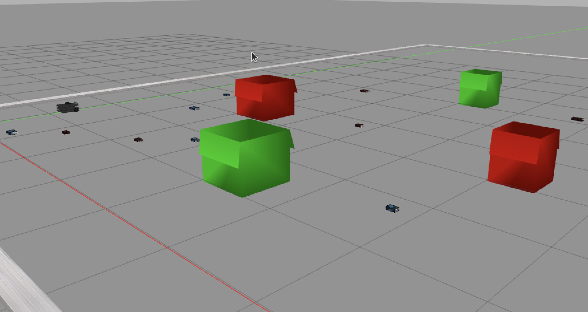
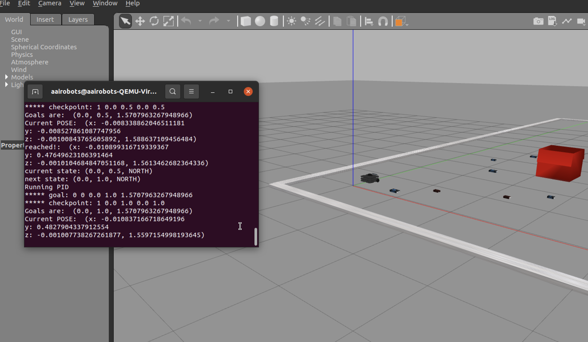

TurtleBot Planning and Action Refinement


Project Goal
This project is centered around implementing planning techniques using PDDL (Planning Domain Definition Language) in dynamic environments, such as bookWorld and cafeWorld, where TurtleBot3 operates. The project focuses on understanding and applying concepts of domain and problem formulation, action definitions, and planning algorithms. It builds upon the high-level planning tasks covered in class, challenging students to implement PDDL files, define actions for the robot (like picking and moving objects), and refine these high-level actions into low-level executable steps that can be simulated in the Gazebo environment. Students will need to complete the PDDL files, implement a downward refinement process, and ensure the TurtleBot3 can successfully navigate the environment, pick up objects, and place them in goal locations, following an optimal plan.
Project Background
The goal is to develop a complete planning solution for TurtleBot3 in both bookWorld and cafeWorld environments. This involves: Completing the domain and problem PDDL files, specifically defining the pick and move actions and writing a problem-independent goal for the robot. Implementing downward refinement of high-level plans, where actions like "move" are translated into a sequence of low-level commands (e.g., MoveF, TurnCW) that TurtleBot3 can execute. Testing the implemented solution in Gazebo, ensuring that the robot can autonomously navigate, pick up objects, and place them in correct locations based on size and type. Optionally, improving the plan's quality by reducing the number of actions through more efficient planners and search algorithms.